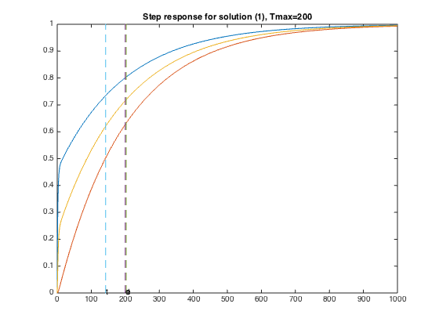
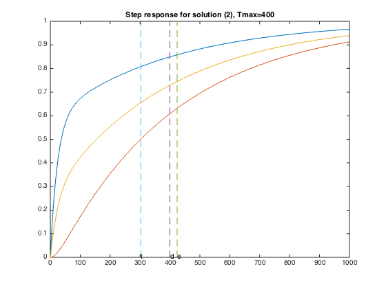
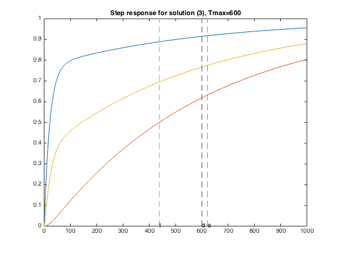
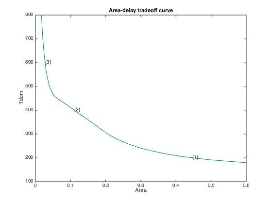

% Section 5.3, L. Vandenberghe, S. Boyd, and A. El Gamal % "Optimizing dominant time constant in RC circuits" % Original by Lieven Vandenberghe % Adapted for CVX by Joelle Skaf - 11/25/05 % Modified by Michael Grant - 3/8/06 % % We size the wires for an interconnect circuit with four nodes. The % topology of the circuit is more complex; the wires don't even form a tree % (refer to Figure 13 in the paper). % The problem can be formulated with the following SDP: % minimize sum(xi*li) % s.t. 0 <= xi <= wmax % Tmax*G(x) - C(x) >= 0 % Please refer to the paper (section 2) to find what G(x) and C(x) are. % % Circuit parameters % n = 4; % number of nodes m = 6; % number of branches G = 0.1; % resistor between node 1 and 0 Co = 10; % load capacitance wmax = 10.0; % maximum width % alpha: conductance per segment % 2 * beta: capacitance per segment alpha = [ 1.0, 1.0, 1.0, 1.0, 1.0, 1.0 ]; beta = [ 10, 10, 100, 1, 1, 1 ]; % % Build capacitance and conductance matrices % CC = zeros(n,n,m+1); GG = zeros(n,n,m+1); % constant terms CC(3,3,1) = Co; GG(1,1,1) = G; % branch 1 CC(1,1,2) = + beta(1); CC(2,2,2) = + beta(1); GG(1,1,2) = + alpha(1); GG(2,1,2) = - alpha(1); GG(1,2,2) = - alpha(1); GG(2,2,2) = + alpha(1); % branch 2 CC(2,2,3) = + beta(2); CC(3,3,3) = + beta(2); GG(2,2,3) = + alpha(2); GG(3,2,3) = - alpha(2); GG(2,3,3) = - alpha(2); GG(3,3,3) = + alpha(2); % branch 3 CC(1,1,4) = + beta(3); CC(3,3,4) = + beta(3); GG(1,1,4) = + alpha(3); GG(3,1,4) = - alpha(3); GG(1,3,4) = - alpha(3); GG(3,3,4) = + alpha(3); % branch 4 CC(1,1,5) = + beta(4); CC(4,4,5) = + beta(4); GG(1,1,5) = + alpha(4); GG(4,1,5) = - alpha(4); GG(1,4,5) = - alpha(4); GG(4,4,5) = + alpha(4); % branch 5 CC(2,2,6) = + beta(5); CC(4,4,6) = + beta(5); GG(2,2,6) = + alpha(5); GG(2,4,6) = - alpha(5); GG(4,2,6) = - alpha(5); GG(4,4,6) = + alpha(5); % branch 6 CC(3,3,7) = + beta(6); CC(4,4,7) = + beta(6); GG(3,3,7) = + alpha(6); GG(4,3,7) = - alpha(6); GG(3,4,7) = - alpha(6); GG(4,4,7) = + alpha(6); % Reshape for easy Matlab use CC = reshape(CC,n*n,m+1); GG = reshape(GG,n*n,m+1); % % Compute points the tradeoff curve, and the three sample points % npts = 50; delays = linspace( 180, 800, npts ); xdelays = [ 200, 400, 600 ]; xnpts = length(xdelays); areas = zeros(1,npts); sizes = zeros(6,xnpts); for i = 1 : npts + xnpts, if i > npts, xi = i - npts; delay = xdelays(xi); disp( sprintf( 'Particular solution %d of %d (Tmax = %g)', xi, xnpts, delay ) ); else, delay = delays(i); disp( sprintf( 'Point %d of %d on the tradeoff curve (Tmax = %g)', i, npts, delay ) ); end % % Construct and solve the convex model % cvx_begin sdp quiet variable x(6) variable G(n,n) symmetric variable C(n,n) symmetric minimize( sum( x ) ) subject to G == reshape( GG * [ 1 ; x ], n, n ); C == reshape( CC * [ 1 ; x ], n, n ); delay * G - C >= 0; 0 <= x <= wmax; cvx_end if i <= npts, areas(i) = cvx_optval; else, xareas(xi) = cvx_optval; sizes(:,xi) = x; % % Plot the step response % figure(xi+1); A = -inv(C)*G; B = -A*ones(n,1); T = linspace(0,1000,1000); Y = simple_step(A,B,T(2),length(T)); hold off; plot(T,Y([1,3,4],:),'-'); hold on; % compute threshold delay, elmore delay, dominant time constant tthres=T(min(find(Y(3,:)>0.5))); tdom=max(eig(inv(G)*C)); telm=max(sum((inv(G)*C)')); plot(tdom*[1;1], [0;1], '--', telm*[1;1], [0;1],'--', ... tthres*[1;1], [0;1], '--'); text(tdom,0,'d'); text(telm,0,'e'); text(tthres,0,'t'); title(sprintf('Step response for solution (%d), Tmax=%g', xi, delay )); end end % % Plot the tradeoff curve % figure(1) ind = isfinite(areas); plot(areas(ind), delays(ind)); xlabel('Area'); ylabel('Tdom'); title('Area-delay tradeoff curve'); hold on for k = 1 : xnpts, text( xareas(k), xdelays(k), sprintf( '(%d)', k ) ); end % % Display sizes for the three solutions % disp(['Three specific solutions:']); sizes
Point 1 of 50 on the tradeoff curve (Tmax = 180)
Point 2 of 50 on the tradeoff curve (Tmax = 192.653)
Point 3 of 50 on the tradeoff curve (Tmax = 205.306)
Point 4 of 50 on the tradeoff curve (Tmax = 217.959)
Point 5 of 50 on the tradeoff curve (Tmax = 230.612)
Point 6 of 50 on the tradeoff curve (Tmax = 243.265)
Point 7 of 50 on the tradeoff curve (Tmax = 255.918)
Point 8 of 50 on the tradeoff curve (Tmax = 268.571)
Point 9 of 50 on the tradeoff curve (Tmax = 281.224)
Point 10 of 50 on the tradeoff curve (Tmax = 293.878)
Point 11 of 50 on the tradeoff curve (Tmax = 306.531)
Point 12 of 50 on the tradeoff curve (Tmax = 319.184)
Point 13 of 50 on the tradeoff curve (Tmax = 331.837)
Point 14 of 50 on the tradeoff curve (Tmax = 344.49)
Point 15 of 50 on the tradeoff curve (Tmax = 357.143)
Point 16 of 50 on the tradeoff curve (Tmax = 369.796)
Point 17 of 50 on the tradeoff curve (Tmax = 382.449)
Point 18 of 50 on the tradeoff curve (Tmax = 395.102)
Point 19 of 50 on the tradeoff curve (Tmax = 407.755)
Point 20 of 50 on the tradeoff curve (Tmax = 420.408)
Point 21 of 50 on the tradeoff curve (Tmax = 433.061)
Point 22 of 50 on the tradeoff curve (Tmax = 445.714)
Point 23 of 50 on the tradeoff curve (Tmax = 458.367)
Point 24 of 50 on the tradeoff curve (Tmax = 471.02)
Point 25 of 50 on the tradeoff curve (Tmax = 483.673)
Point 26 of 50 on the tradeoff curve (Tmax = 496.327)
Point 27 of 50 on the tradeoff curve (Tmax = 508.98)
Point 28 of 50 on the tradeoff curve (Tmax = 521.633)
Point 29 of 50 on the tradeoff curve (Tmax = 534.286)
Point 30 of 50 on the tradeoff curve (Tmax = 546.939)
Point 31 of 50 on the tradeoff curve (Tmax = 559.592)
Point 32 of 50 on the tradeoff curve (Tmax = 572.245)
Point 33 of 50 on the tradeoff curve (Tmax = 584.898)
Point 34 of 50 on the tradeoff curve (Tmax = 597.551)
Point 35 of 50 on the tradeoff curve (Tmax = 610.204)
Point 36 of 50 on the tradeoff curve (Tmax = 622.857)
Point 37 of 50 on the tradeoff curve (Tmax = 635.51)
Point 38 of 50 on the tradeoff curve (Tmax = 648.163)
Point 39 of 50 on the tradeoff curve (Tmax = 660.816)
Point 40 of 50 on the tradeoff curve (Tmax = 673.469)
Point 41 of 50 on the tradeoff curve (Tmax = 686.122)
Point 42 of 50 on the tradeoff curve (Tmax = 698.776)
Point 43 of 50 on the tradeoff curve (Tmax = 711.429)
Point 44 of 50 on the tradeoff curve (Tmax = 724.082)
Point 45 of 50 on the tradeoff curve (Tmax = 736.735)
Point 46 of 50 on the tradeoff curve (Tmax = 749.388)
Point 47 of 50 on the tradeoff curve (Tmax = 762.041)
Point 48 of 50 on the tradeoff curve (Tmax = 774.694)
Point 49 of 50 on the tradeoff curve (Tmax = 787.347)
Point 50 of 50 on the tradeoff curve (Tmax = 800)
Particular solution 1 of 3 (Tmax = 200)
Particular solution 2 of 3 (Tmax = 400)
Particular solution 3 of 3 (Tmax = 600)
Three specific solutions:
sizes =
0.0000 0.0000 0.0000
0.0000 0.0000 0.0000
0.0000 0.0381 0.0273
0.2303 0.0369 0.0000
0.0000 0.0000 0.0000
0.2156 0.0361 0.0000
   